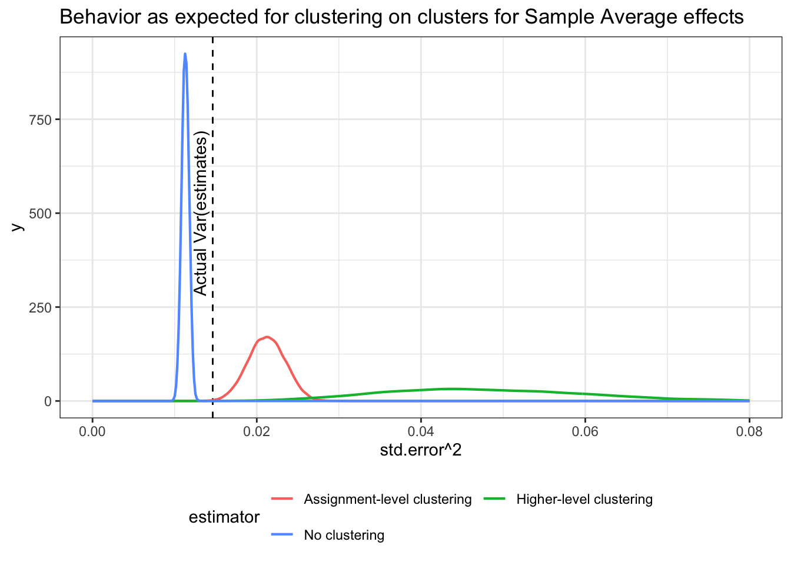

design_1 <-
declare_model(
schools = add_level(N = 20, u_b = rnorm(N)),
classrooms = add_level(N = 5, u_c = rnorm(N)),
students = add_level(
N = 5,
u_i = rnorm(N),
potential_outcomes(Y ~ Z + (u_i + u_b + u_c))
)
) +
declare_inquiry(ATE = mean(Y_Z_1 - Y_Z_0)) +
declare_assignment(Z = cluster_ra(clusters = classrooms)) +
declare_measurement(Y = reveal_outcomes(Y ~ Z)) +
declare_estimator(Y ~ Z, inquiry = "ATE", model = lm_robust,
label = "No clustering") +
declare_estimator(Y ~ Z, inquiry = "ATE", model = lm_robust,
clusters = classrooms,
label = "Assignment-level clustering") +
declare_estimator(Y ~ Z, inquiry = "ATE", model = lm_robust,
clusters = schools,
label = "Higher-level clustering")In designs in which a treatment is assigned in clusters (e.g. classrooms), it’s usual practice to account for cluster-level correlations when you generate estimates of uncertainty about estimated effects. But units often share commonalities at higher levels, such as at a block level (e.g. schools). Sometimes you need to take account of this and sometimes you don’t. We show an instance of the usual procedure of clustering by assignment cluster (classrooms) working well and show how badly you can do with a more conservative approach (clustering by schools). We then show an example of a design in which clustering at the level of treatment assignment (classroom) is not good enough; in the troublesome example, schools are thought of as being sampled from a larger population of schools and treatment effects are different in different schools. In this case, if you want estimates of uncertainty for population level effects you have to cluster at the school level even though treatment is assigned within schools.
David McKenzie discussed this issue a while ago here following discussions by Chris Blattman here. While broadly in line with these discussions, our take-away leans a bit more in the direction that yes you really might want to cluster at higher levels than treatment assignment in an experiment in some cases, but only when you are targeting non-sample-based estimands such as population average effects.
More generally, the post shows how to check for these kinds of issues when you declare a design, exploiting the fact that with a design declared you can compare the distribution of estimates of standard errors with the standard deviation of the estimates you get across many runs. So you can see not just whether estimates of uncertainty are unbiased, but also whether they are precise.
A case in which clustering standard errors at the level of assignment works well
Consider first a simple design in which there are block-level and cluster-level shocks, but treatment is assigned at the cluster level. The design has three strategies for estimating the standard error (the standard deviation of the estimator’s sampling distribution):
- ignore clustering;
- allow for error correlation at the cluster level; and
- allow for error correlation at the block level.
Here is a full declaration of the design.1
This design has twenty blocks, each with five clusters made up of five individuals. There are individual, cluster and block shocks, all with unit standard deviation. This means that the ICC is 2/3. Conditioning on block however, the ICC is just 1/2 (since the cluster level and individual level shocks have the same variance).
We simulate the design many times (using simulate_design(design_1)). This generates a dataset with the point estimate from each run (which is common across approaches), as well as the estimate of the variance of the point estimates (the standard error squared). This provides enough information to see how well the estimates of uncertainty are doing.
Below we plot the distribution of estimates of standard errors (squared) from each of the three strategies alongside the actual variance of estimates across runs (vertical line).

The first thing that jumps out is the bias in the approach that assumes no error correlation: the average standard error (squared) is 0.02, which is well below the variance of the estimates across our repeated samples. That’s the anti-conservative bias that worries people when you fail to cluster standard errors for clustered treatments. It can be quite extreme, as here.
By contrast, the approaches that allow for cluster- and block-level correlation in errors approximate the variance in the sampling distribution of the estimates nicely, and on average are about equal to the true variance of the estimates. You will notice though that the distribution of estimates of uncertainty exhibit a lot more variance when you cluster at the block level. What this means is that in this design clustering at too high a level makes it more likely that you will get the estimates of uncertainty wrong (even if you will be right on average).
The hummable tune version: If you cluster too high your estimates of variance may have too much variance.
A case in which it makes sense to cluster errors above the level of treatment assignment
So does this mean you should only ever account for error correlation at the same level the treatment is assigned? Not always. Consider the following similar design, in which there are heterogenous treatment effects that depend on higher-level shocks (in this case at the school level), whereas treatment is still assigned at the lower level of classrooms.
new_model <- declare_model(
schools = add_level(N = 20, u_b = rnorm(N)),
classrooms = add_level(N = 5, u_c = rnorm(N)),
students = add_level(
N = 5,
u_i = rnorm(N),
potential_outcomes(Y ~ u_i + u_b*Z)
)
)
design_2 <- replace_step(design_1, step = 1, new_model)This kind of design might describe a situation in which individuals in different areas are selected at random to participate in area-level workshops; or one in which clusters of voters are assigned to get information about the political representative in their area before an election, and so on.
The distribution of estimates of uncertainty now looks like this:

We see that allowing for group-level correlation in errors among treated units provides estimates of uncertainty that, on average, track the variance of the sampling distribution quite well. Ignoring this correlation produces standard errors that are too small, leading to over-confidence.
The design here is not particularly unusual. Heterogeneous effects across groups could be a feature of many studies. This suggests that the issue here could be fairly general.
Not such a concern if your focus is on sample average treatment effects
A key feature of the last design is that the group-level treatment effects are stochastic, and so each simulation takes a draw of blocks from a large population of blocks. Thus, even though the assignment is not clustered by block, the units in each blocks are themselves clusters from a sampling process.
This resonates with results in Abadie et al. (2017) (here) which highlights the distinct sampling and assignment rationales for clustering. Here clustering at the assignment level does not account for the clustered sampling into the study. To illustrate this last point we make a small change to the design to remove this cluster-sampling feature. We draw a single dataset, and suppose that we are dealing with a finite population.
fixed_data <- draw_data(design_2)We then splice this new fixed data into the previous design to make a new design.
design_3 <- replace_step(design_2, 1, declare_model(data = fixed_data))Because we are holding the population data fixed, we are no longer sampling 20 clusters from the set of possible clusters. This restricts the variance of the sampling distribution to that generated by the assignment.
Now the distribution of estimates of uncertainty look like this:

The implications are that when we focus on the sample estimand the version that clusters standard errors at the level of assignment works fairly well (they are slightly conservative reflecting the fact that the Neyman standard errors are conservative). The standard errors that account for group-level error correlation are wildly conservative, since they are positing possible treatment effects that could never come into existence under this model. It’s the wrong sampling distribution.
Takeaways
The key takeaways:
Senn’s “as ye randomize so shall ye analyze” principle works fine in standard set ups when you are interested in sample average estimands: it makes sense to cluster your standard errors at the level of treatment assignment.
You can still go too low: if your units of assignment (be they clusters or individuals) are themselves members of higher-level clusters that are sampled from a larger population and you are interested in population average estimands, then you may need to allow for correlation in errors at that level to account for clustering of effects generated by sampling
You can definitely go too high: but this doesn’t mean you should default to a “conservative” rule of thumb. If you assume a sampling process where one doesn’t exist, you can end up being wildly over-conservative in your estimates of the sampling distribution or having an estimate of uncertainty that is right in expectation but far off in realization.
If in doubt, diagnose.
References
Abadie, Alberto, Susan Athey, Guido W Imbens, and Jeffrey Wooldridge. 2017. “When Should You Adjust Standard Errors for Clustering?” National Bureau of Economic Research.
Footnotes
This kind of design can also be made in a single line with the
DesignLibrarypackage using theblock_cluster_two_arm_designer().↩︎